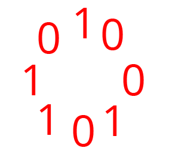

Có M bạn nam và N bạn nữ được sắp xếp vào một vòng tròn
Yêu cầu: Tính mức chênh lệch giữa số cặp nam-nam (2 bạn nam đứng cạnh nhau) và nữ-nữ (hai bạn nữ đứng cạnh nhau)
Input
- Dòng đầu tiên 2 số nguyên dương M,N (0<=M,N<=106)
- Dòng tiếp theo là một chuỗi nhị phân biểu thị trạng thái của vòng tròn (1 là nam,0 là nữ)
Output
- Một dòng duy nhất là kết quả bài toán
Giải thích
- Với M=4,N=4 và chuỗi trạng thái là 10010110, ta có vòng tròn như hình dưới

Có 1 cặp nam-nam (1-1) và 1 cặp nữ-nữ (0-0), vậy mức chênh lệch giữa cặp nam-nam và nữ-nữ là 0